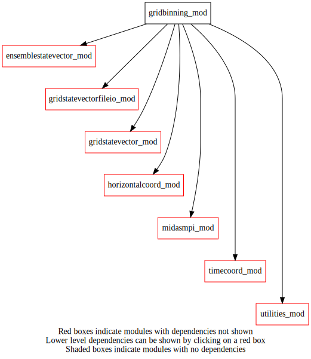
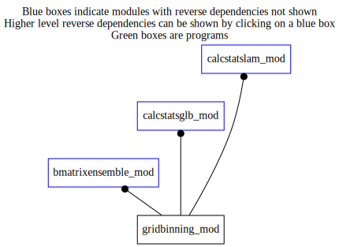

Dependency Diagrams:
 Direct Dependency Diagram¶
 Reverse Dependency Diagram¶
Description
MODULE gridBinning_mod (prefix=’gbi’ category=’4. Data Object transformations’)
- Purpose
To compute categorical mean and standard deviation for gridded data contained in a gridStateVector or in an ensemble of gridStateVectors (e.g. the respective mean over land and sea)
Quick access
- Variables
- Routines
gbi_deallocate(),gbi_mean_gsv(),gbi_setup(),gbi_stddev_ens()Needed modules
midasmpi_mod: MODULE midasMpi_mod (prefix=’mmpi’ category=’8. Low-level utilities and constants’)
ensemblestatevector_mod: MODULE ensembleStateVector_mod (prefix=’ens’ category=’6. High-level data objects’)
gridstatevector_mod: MODULE gridStateVector_mod (prefix=’gsv’ category=’6. High-level data objects’)
gridstatevectorfileio_mod: MODULE gridStateVectorFile_mod (prefix=’gio’ category=’4. Data Object transformations’)
utilities_mod: MODULE utilities_mod (prefix=’utl’ category=’8. Low-level utilities and constants’)
horizontalcoord_mod: MODULE HorizontalCoord_mod (prefix=’hco’ category=’7. Low-level data objects’)
timecoord_mod: MODULE timeCoord (prefix=’tim’ category=’7. Low-level data objects’)Types
- type gridbinning_mod/unknown_type¶
- Type fields
% binningstrategy [character ]
% numbins2d [integer ]
% statevector_bin2d [struct_gsv ]
Variables
- gridbinning_mod/gbi_mean [public]¶
- gridbinning_mod/gbi_stddev [public]¶
- gridbinning_mod/struct_gbi [public]¶
Subroutines and functions
- subroutine gridbinning_mod/gbi_setup(gbi, binningstrategy, statevector_template, hco_coregrid[, mpi_distribution_opt[, writebinstofile_opt]])¶
- Arguments
gbi [struct_gbi ]
binningstrategy [character ,in]
statevector_template [struct_gsv ]
hco_coregrid [struct_hco ,pointer]
- Options
mpi_distribution_opt [character ,in,]
writebinstofile_opt [logical ,in,]
- Called from
- Call to
gsv_isallocated(),utl_abort(),gsv_allocate(),gio_readfromfile(),gsv_copyheightsfc(),gsv_deallocate(),gio_writetofile()
- subroutine gridbinning_mod/gbi_deallocate(gbi)¶
- Arguments
gbi [struct_gbi ]
- Called from
- Call to
- subroutine gridbinning_mod/gbi_mean_gsv(gbi, statevector_in, statevector_out)¶
- Arguments
gbi [struct_gbi ]
statevector_in [struct_gsv ]
statevector_out [struct_gsv ]
- Call to
- subroutine gridbinning_mod/gbi_stddev_ens(gbi, ens, statevector)¶
- Arguments
gbi [struct_gbi ]
ens [struct_ens ]
statevector [struct_gsv ]
- Call to
gsv_isallocated(),ens_varnameslist(),gsv_allocate(),ens_getnumstep(),ens_gethco(),ens_getvco(),tim_getdatestamp(),ens_getlatlonbounds(),ens_getnumk(),ens_getnummembers(),ens_getonelev_r4()
{kind=link}
{kind=link}